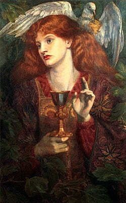
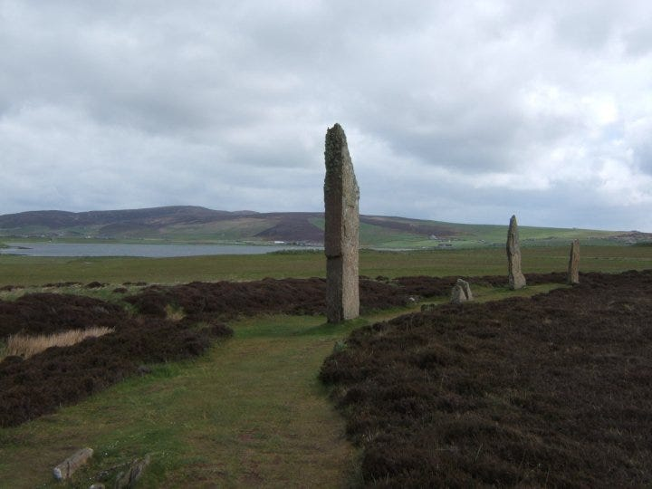
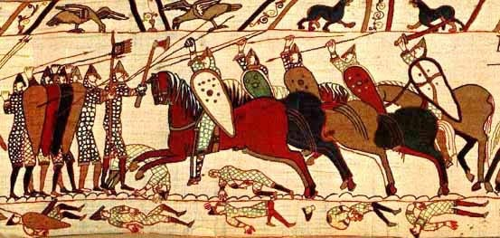
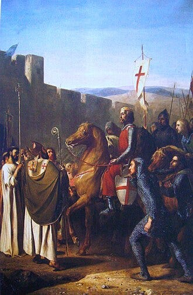
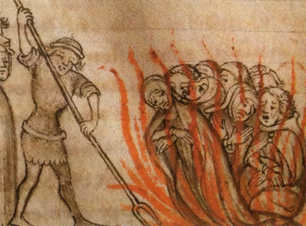
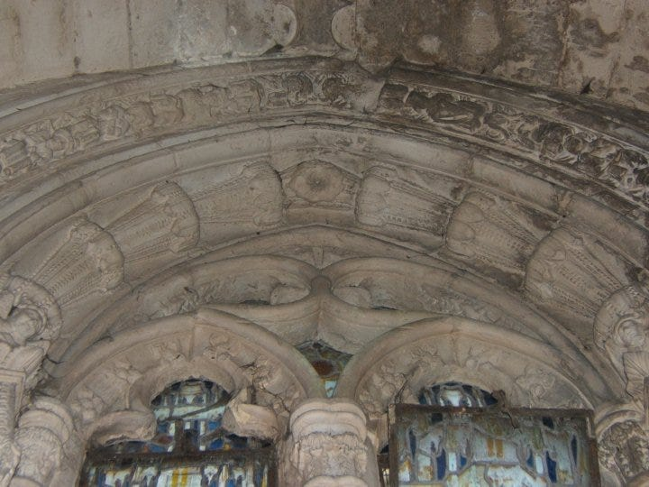
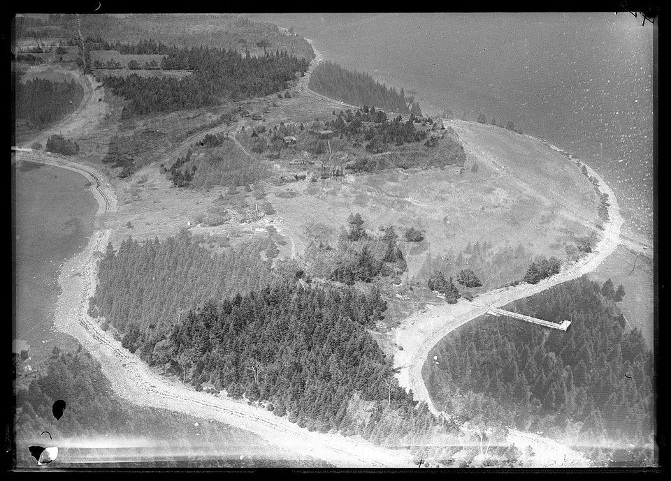
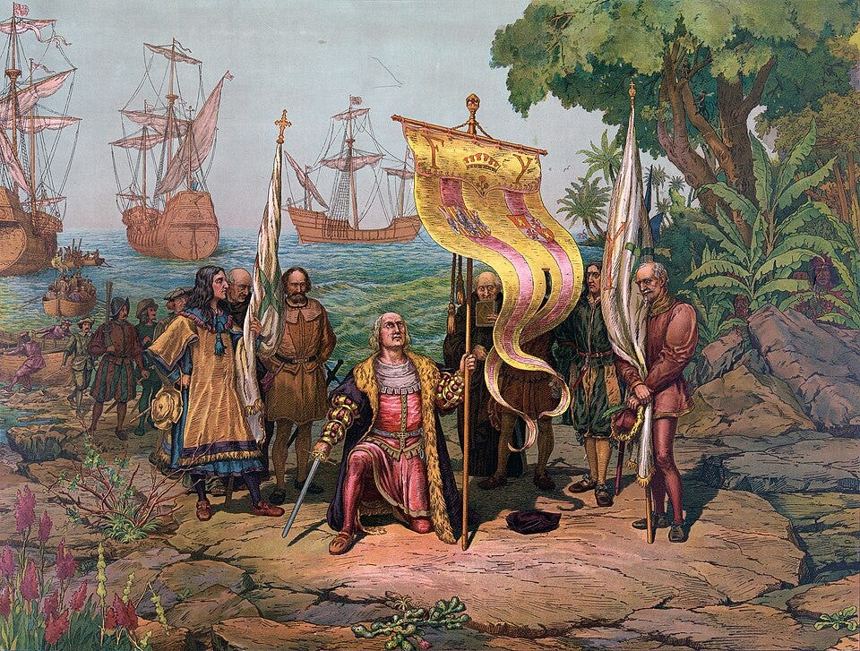
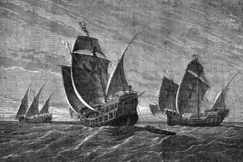
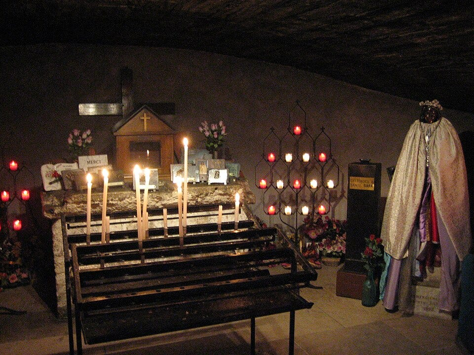

The Da Vinci Code and a Spark of Curiosity
Back in 2003, I joined over eighty million readers in diving into the The Da Vinci Code (book). The book caused a global stir with its shocking claims — most notably, that Jesus and Mary Magdalene were married and had children whose, descendants formed a sacred bloodline known as the Holy Grail. Many sources link this bloodline to the surname Sinclair.
Though the book was fiction, it drew heavily from nonfiction works and Grail legends. Raised Catholic, I found the idea of Jesus having a family both fascinating and deeply contradictory to everything I’d been taught in school and church.

A Journey into Hidden Histories
Driven by curiosity, I began exploring books about Jesus, Mary Magdalene, and the secretive groups said to protect their legacy — namely, the Knights Templar and the Freemasons. While reading the The Hiram Key (book), I stumbled upon a startling coincidence: the Sinclairs once ruled a remote group of islands in northern Scotland called the Orkneys.
This caught my attention immediately. The Brass family, my ancestors, had also originated from the Orkneys. Could there be a connection?

Tracing My Family Tree
Digging deeper into my genealogy, I discovered that my five-times great-grandfather, Magnus Brass, was married to Katherine Sinclair in 1759. Using artificial intelligence tools, I traced Katherine’s lineage back over a thousand years to Walderne Sinclair, an associate of William the Conqueror, the leader of the Norman invasion force that conquered England in 1066.
Walderne’s descendants eventually acquired lands across England and Scotland. Among them was Henry Sinclair, the first Earl of the Orkney Islands — and my nineteen-times great-uncle.

Mysteries, Legends, and Spiritual Secrets
Through extensive research, I found that mystery and spiritual intrigue seem to swirl around the Sinclair family throughout history. Legends persist that the Sinclairs were deeply connected to the Knights Templar, and some believe this relationship culminated in Henry Sinclair’s voyage to America — a journey that may have predated Columbus by nearly a century.
Some accounts even suggest that Henry Sinclair buried Templar treasure at Oak Island, Nova Scotia — a site still shrouded in mystery today.
The Flight of the Templars
Guardians of the Grail
To understand the guardianship of the Grail treasure, we must look at the history of the Knights Templar.
Many are convinced the Knights Templar were the protectors of the Holy Grail. Some believe the Grail is a sacred bloodline, others a holy treasure — or possibly both. The Templars formed during the First Crusade, claiming to defend Christian pilgrims, but their true purpose may have been far more secretive.
While in Jerusalem, they were headquartered beneath the Al-Aqsa Mosque on the Temple Mount, in what was once the stables beneath the Temple of Solomon. It’s long been rumored they excavated beneath the site and may have discovered the lost treasure of the Temple of Jerusalem.

The Fall and the Escape
In 1307, King Philip of France and Pope Innocent ordered the arrest and disbanding of the Knights Templar. Legend has it the knights were tipped off before the raid and escaped with their treasure aboard a fleet of ships from La Rochelle.
It’s said that half the fleet sailed to Scotland, and the other half to America. Robert the Bruce offered sanctuary to some of the fleeing Templars. The Sinclairs, too, were believed to be sympathetic to their cause.

The Fortress of Kirkwall
In 1379, Henry Sinclair built a massive fortress in Kirkwall, the capital of the Orkney Islands. I’ve read that its walls were fifteen feet thick and that a cannonball would split in two upon impact. When I visited Orkney, an archaeologist told me the castle had little strategic value — it appeared to be designed like a giant treasure box.
Could this have been the hiding place of the Grail treasure?
Power Struggles and a Secret Voyage
Henry Sinclair was granted the Earldom of Orkney in 1379. But the Bishop of Orkney already wielded significant influence. A bitter rivalry developed between Henry and the bishop, as Henry placed his family and allies in key positions of power.
There are traditions that say in 1398, Henry Sinclair landed in present-day Nova Scotia. Legends from the Mi’kmaq people speak of white men arriving in longboats, long before the English or French. These visitors came in peace and had positive interactions with the Mi’kmaq.
There are some members of the Sinclair family and researchers who have passionately documented Henry’s expedition by using family oral traditions, historical evidence and symbolic interpretation.
Susan M. Sinclair Green Grady is a Sinclair descendant. She has written extensively about the voyage. The following quote confirms her conviction in the reality of Henry’s expedition.
“These sparse bits of evidence provide justification for believing that Prince Henry Sinclair came to North America ninety-four years before Christopher Columbus… These are real things; you can see them and touch them.”
There is a historical marker in Guysborough County, Nova Scotia, commemorating the landing of Henry Sinclair. It describes a fleet of 12 ships with 200–300 men, including soldiers, monks, and craftsmen. The inscription
The Voyage of Prince Henry Sinclair
“This was not an act of singular courage but proved quite conclusively that his voyage had been made with a view to exploration and discovery in the wake of his Viking forbears whose sagas he had listened to as a child.”
— Clan Sinclair Society of Nova Scotia
- In 1398, Prince Henry Sinclair allegedly sailed to North America, landing near Guysborough, Nova Scotia.
- The commemorative plaque was erected by the Clan Sinclair Society of Nova Scotia to honor this voyage.
Not only do many of the Sinclair family believe Henry did land in America, but they also are convinced the voyage was a mission to preserve sacred Templar knowledge.
The Death of Henry Sinclair
Shortly after his return to Orkney — around 1399 or 1400 — Henry Sinclair was killed by English forces during a raid. The timing of his death, so close to his voyage, raised questions. Could the Bishop of Orkney have known Henry possessed the Holy Grail treasure?
During medieval times, the English Crown, the Church, and Rome were deeply entwined. If Henry held documents or relics that could undermine the Church’s authority, it’s possible that powerful forces sought to eliminate him.
Rosslyn Chapel and the Stone Legacy
There is evidence of Henry’s journey to America carved in stone at Rosslyn Chapel, near Edinburgh. These lands belonged to the Sinclair family. In 2006, I visited the chapel, built by William Sinclair, Henry’s grandson. I had no idea at the time that it was my 17-times great-grandfather who had built it.
The chapel is intricately carved with Masonic and Templar motifs. Some point to carvings of corn and aloe vera — plants unknown in Europe at the time — as proof of Henry Sinclair’s voyage to America. The chapel was built in 1476, well before Europeans had seen these plants.


The Oak Island Mystery
A Strange Discovery in 1795
In 1795, teenager Daniel McGinnis and two friends saw strange lights on Oak Island, Nova Scotia. Investigating, they found a depression in the ground near a large oak tree and remnants of a block-and-tackle device. As they dug, they discovered oak log platforms every ten feet, reaching thirty feet deep before hitting a booby-trapped flood tunnel.

Clues Beneath the Surface
In 1804, McGinnis returned with investors and dug deeper. At the 90-foot mark, they found a stone inscribed with mysterious symbols. Witnesses say it read: “Forty feet below, two million pounds are buried.” Coconut fibers found around the flood tunnels were carbon-dated to pre-1795, possibly linking the site to Henry Sinclair’s 1398 voyage.
The Curse of Oak Island
In 2014, the History Channel launched the television show, The Curse of Oak Island, led by brothers Rick and Marty Lagina. Their team uncovered:
- Human bone fragments (one European, one Middle Eastern)
- Spanish coins from the 1600s
- A 400-year-old garnet brooch
- Roman coins from 200–300 AD
- A lead Templar cross dated to 900–1300 AD (The lead of the cross was tested and linked to an ancient mine near Rennes-Le-Château in France. For more on Rennes, read my other article on Medium, Wheel of Life Book Teaser)
- Mining tools from the 14th century
- A cobblestone road dated to 1200–1400 AD
Some theorists believe this road was used to transport treasure from ships to the Money Pit.
A Global Puzzle
Artifacts found on Oak Island span centuries and empires — Roman, French, English, Spanish, and Viking. Henry Sinclair’s Norse ancestry could explain his knowledge of lands to the west. The diversity of relics suggests a shared secret among initiated groups across nations.
Only one organization fits that profile: the Knights Templar or their successors, the Freemasons. I believe Henry was just one link in a long chain.
A Family Connection to Columbus
John Drummond: The Hidden Uncle
John Drummond, born in Scotland around 1400, was Henry Sinclair’s grandson — and my 17-times great uncle. In 1424, he settled on the Portuguese island of Madeira, where he became known as João Escórcio. He reportedly kept his surname secret until his death.

A Link to Columbus
John Drummond married Branca Affonso, who was related to Filipa Moniz Perestrello, the wife of Christopher Columbus. That means John Drummond was related to Columbus by marriage.
I remember hearing rumors that Columbus had maps and charts guiding him to the New World. At the time, I thought that was ridiculous — until I learned of Henry Sinclair’s voyage and his grandson’s connection to Columbus. It’s possible Columbus had access to Henry’s archives.
I found an interesting contribution to the Christian Science Monitor in relation to the names of the ships of Christopher Columbus.
As was common of the time, the crews gave each ship nicknames. La Santa Clara became la Niña (“the girl”); la Pinta became la Pintada (“the painted one,” in other words, “the prostitute”); and la Santa Gallega became Maria Galante (the name of another prostitute). The church censored these nicknames, but the way we remember them today borrows heavily from the crews’ vernacular.
Columbus may have even given a clue to his connections to the Sinclairs in the name of one the ships from his expedition. The real name of the ship we all know as the Niña was actually Santa Clara. This is equivalent of Saint Clair in French. The French form is the name from which Sinclair originates. The family originally went by Saint Clair in France. This was likely an admission by Columbus to the significance of the Sinclair family and his connection to them.
Is it possible that the name Maria Gallega — sometimes interpreted as “Mary the Galician” — was later confused with the idea of “Mary the Prostitute,” a title wrongly applied to Mary Magdalene? Pope Gregory I inaccurately described Mary Magdalene as a prostitute in 591, a misconception that persisted for centuries.

I also wondered about the connection between the Niña and the legends surrounding a young girl named Sarah from southern France. According to some traditions, Sarah was brought to France by Mary Magdalene after the crucifixion. A few theories even suggest she was Mary Magdalene’s daughter. It’s rather enigmatic that the name Sarah means “princess” in Hebrew. The Niña’s alternate name was the Santa Clara or Saint Clair.
This story may stem from the other belief recorded in several 13th century sources. These accounts describe the teachings of a Christian sect called the Cathars (Pure Ones), who believed Mary Magdalene had been the wife of Christ. Could the association between a young girl in these legends and the Saint Clair name hint at a symbolic link — one that later storytellers connected to the origins of the St. Clair or Sinclair bloodline?

Conclusion: A Treasure Beyond Gold
There is compelling circumstantial evidence that Henry Sinclair reached America long before Columbus. The artifacts on Oak Island suggest something was buried — whether pirate treasure, Spanish silver, Shakespeare’s manuscripts, or sacred relics like the Holy Grail or the Ark of the Covenant.
As I have moved along this path of discovery, I realize that history isn’t something from which we are disconnected. It is etched into our bloodlines and connects all of us to the people and events that have shaped the history of the world. That is why I am compelled to search for truth in mysteries, which have long been concealed.
With each season of The Curse of Oak Island, more pieces of the puzzle emerge. I encourage anyone intrigued by this mystery to watch the show — and consider the possibility that history may be far richer, and far stranger, than we were ever taught.
The legacy of my family history continues to unfold. With each new piece of research, I’m discovering fascinating evidence of historical secrets hidden for centuries.
Curious about the hidden truths behind the Sinclair family, the Knights Templar, and the real story of the Holy Grail? Dive into my soon to be released book, The Wheel of Life: Decoding the Holy Grail, where centuries of mystery come to light.